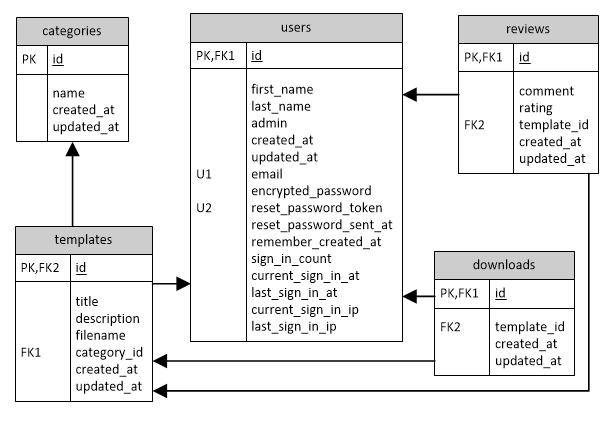
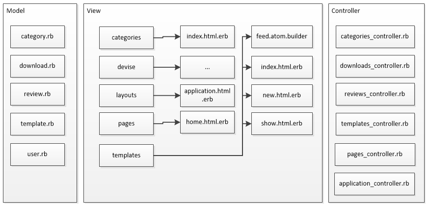
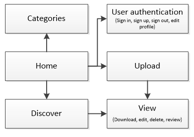
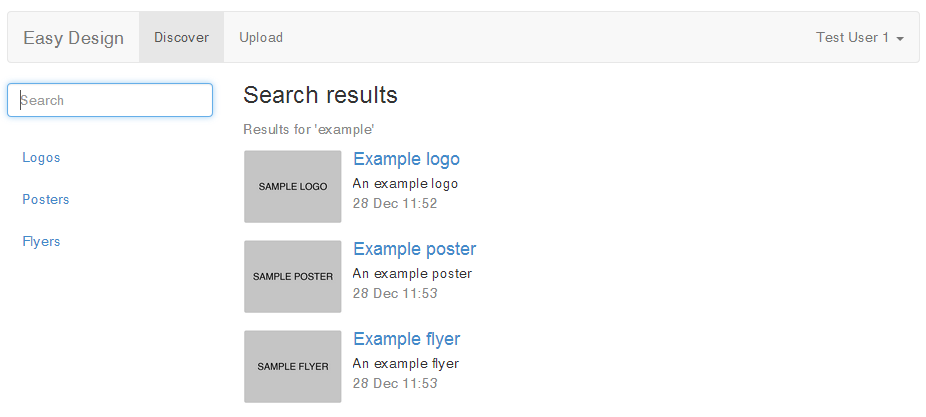
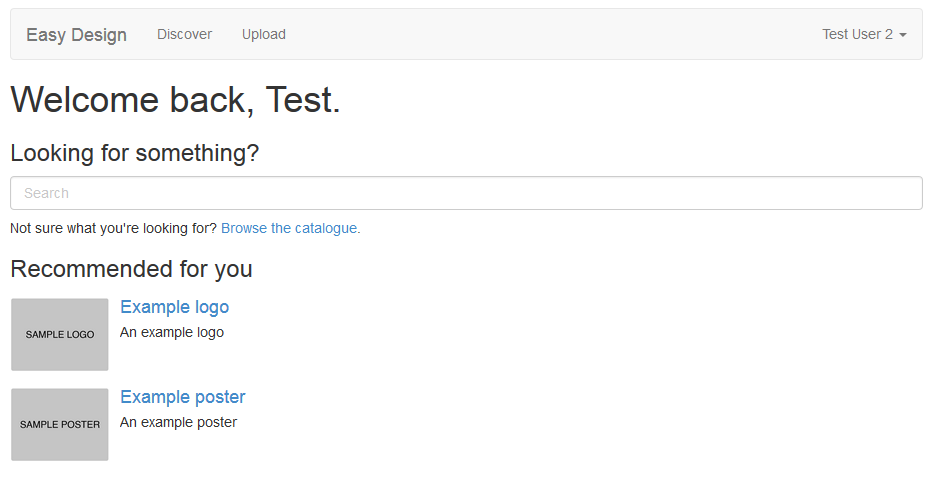
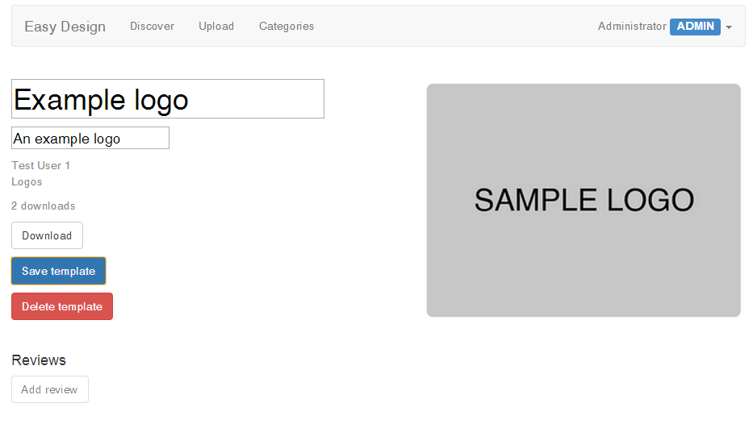
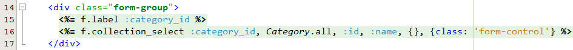

This technical manual will cover the system architecture of Easy Design,
explain which features from the specification have been implemented,
and the tools, technologies and techniques that have been used throughout
development.
Contents
Overview
Introduction
Easy Design is a new startup company launching a service to enable
customers such as charities and organisations to quickly produce well
designed logos, posters and flyers based on user generated content.
The site will make money through advertising.
Implemented User Stories
1. Upload Templates
Content creators upload their created design templates to the site. They
must first register with the site before being able to upload content.
2. Discover Templates
Customers can search and browse the site to discover the content
they are looking for. They can browse by content type (e.g. logos, posters, flyers)
or by search term.
Newly uploaded templates, those with a high number of downloads
and those with high ratings are displayed on the discover page.
Templates are also recommended to customers based on their previous
downloads.
3. Download Templates
When a customer finds a design they like, they can download a high quality
version of the design which they can then edit before printing out or
uploading to their own web site.
A customer must register with the site to be able to download the design.
4. Review Templates
When a customer has downloaded a design, they gain permission to rate
and review it. The system can then recommend additional
content to customer based upon this information.
5. System Management
Administrators are able to do additional actions to normal users. They
can edit and delete templates as well as add and edit categories.
Architecture and Design
Chosen Technologies
Ruby on Rails was chosen as the
platform for the system. It was chosen as the developer had an interest
to learn Ruby and the Rails framework.
MySQL was chosen at the Database Management System (DBMS) because of
its familiarity to the developer as well as supporting more features and
being easier to interface with than a lighter solution such as
SQLite.
Database Design
An Entity Relationship Diagram is shown below based on the final
schema of the database. It shows the different tables in the database
and their foreign key relations.

Entity Relationship Diagram
System Structure
The system is structured using the Model–view–controller (MVC) software
pattern. The diagram below shows the different MVC components. Each model
has an accompanying controller and in most cases one or more views.

System Structure
Site Structure
The Site Map below shows the design of the site but showing the main pages
and the routes between them.

Site Map
Implemented Features
This section details the features that have been implemented in Easy Design,
along with a brief explanation, the part of the specification the feature
meets and accompanying evidence.
Template Catalogue
Items (eg products) are stored in a dynamic and editable hierarchy,
which can easily be browsed and searched
Each template in the database is assigned a category. Users can browse
templates by category, or search for a template by name or description.
Searching is provided using Thinking Sphinx,
a Ruby library that connects to the Sphinx
search server.
Thinking Sphinx provides a search method that can be used
on the database models. An indexing file, /app/indices/template_index.rb (shown below), is required so
Sphinx knows what properties of the models to index.
Searching can be done from the 'Discover' page or from the home page.

Screen shot showing the search results page
Administrators can add or edit categories by visiting /categories.
The code snippet below shows the create method in
/app/controllers/categories_controller.rb.
def create
@category = Category.new(category_params)
@category.save
redirect_to '/categories'
end
Recommendation System
a personalised dynamic recommender system
Easy Design provides a recommendation system for users. A list of
possible recommendations are shown on the home page. The algorithm
works in three steps:
Get all templates the user has downloaded
For each template, get other users who have downloaded that template
For each of these users, get all other templates they have downloaded
Recommend those templates to the user
The full source for the algorithm can be found in the home
method in /app/controllers/pages_controller.rb.

Screen shot showing templates being recommended to a user
Template management
Display and update work items involving multiple users and roles
A list of all templates can be found through /discover or
/templates. Individual templates can then be viewed through
the /templates/{template_id} endpoint. Administrators can
update or delete a template using the provided buttons.

Screen shot showing a template being edited by an administrator
The code snippet below shows the controller method for deleting a
template. See /app/controllers/templates_controller.rb.
def destroy
# Only delete if adminif current_user.admin?
@template = Template.find(params[:id]).destroy
render status: 200, json: true
endend
Review System
Users can post comments or messages to selected roles, view them, rate, filter and sort them appropriately.
Users can review a template and give it a rating. They are only able
to post one review per template.
The create review method from /app/controllers/reviews_controller.rb
is shown below.
The reviewing system contains advanced JavaScript. When a user clicks
'Add review' they can enter a textual review, and rate the item by
clicking on the number of stars they feel the template deserves. When they
submit their review, the system converts the number of stars selected into
an integer value, before sending an HTTP POST request to the server.
The snippet below shows some of this JavaScript code. See
/app/assets/javascripts/show.js for the full source.
Dynamic generation of images (eg visualisation of business objects or statistics) and multimedia manipulation (eg scaling or compression).
For each template image uploaded to Easy Design, the system generates
a preview image and a smaller thumbnail image. The preview image is shown
on the template page (e.g. /templates/1) and the thumbnail
is shown on the discover page. The size of the generated images can be
set in /config/application.rb.
The system uses ImageMagick
to generate the preview and thumbnail images. The snippet from
the create method in /app/controllers/templates_controller.rb
below shows the image generation code.
# Upload image file
# From http://guides.rubyonrails.org/form_helpers.html#uploading-files
uploaded_io = params[:template][:image]
@template.filename = SecureRandom.uuid
File.open(Rails.root.join('public', 'uploads', @template.filename), 'wb') do |file|
# Create full size file, preview and thumbnail versions
file.write(uploaded_io.read)
system "convert #{file.path} -resize #{Rails.configuration.preview_size} #{file.path}#{Rails.configuration.preview_extension}"
system "convert #{file.path} -resize #{Rails.configuration.thumbnail_size} #{file.path}#{Rails.configuration.thumbnail_extension}"
end
Data Export
Export of internally stored business data for use in external sites, using XML formatted data.
Easy Design has a public ATOM feed of all the templates in the system
available at /feed.
This allows other developers to make use of the templates uploaded
to Easy Design and include them as part of their own web applications.
The feed method from /app/controllers/templates_controller.rb,
shown below, demonstrates this.
Professional appearance with logo, master pages, style sheets, site menus, breadcrumbs, login status and multi-part forms.
Twitter Bootstrap has been used
throughout the site to give a consistent and professional look and feel.
Individual stylesheets have been used for the different sections of the
site, to prevent the browser requesting unnecessary styles.
The site menu is displayed in the top navigation bar, and the login
status to the right of the navigation bar. Breadcrumbs are not required
because the only nested navigation occurs when viewing a template.
multipart/form-data was used when in the upload form. The code
snippet below shows the HTML that is generated by the form found in
/app/views/templates/new.html.erb.
Professional IDE, including WYSIWYG or syntax-highlighting HTML editor, database administration, and on-the fly display and debugging of web pages and code.
The NetBeans IDE with the
Ruby plugin was used to
develop Easy Design. The screen shot below shows the syntax-highlighting
for both HTML and Ruby syntax.

NetBeans IDE showing syntax highlighting
From /app/views/templates/new.html.erb
Database administration was provided through the high level
Active Record Query Interface, and at a lower level through
HeidiSQL. Active Record also
provided object relational mapping and database/schema generation.
Easy Design was tested in the Google Chrome 31
web browser. Debugging was provided through the Chrome Developer tools
and debugging messages provided by Rails.
The screen shot of the NetBeans IDE also shows form markup generation.
There was no need to manually write the HTML for the form elements.
For example, <%= form_for :template, url: templates_path do |f| >
produces <form accept-charset="UTF-8" action="/templates" enctype="multipart/form-data" method="post">.
External Libraries
External libraries and web services.
The following external libraries were used in the project:
Bootbox.js - Make using Twitter Bootstrap modals easier
Testing and Accessibility
Automated unit testing. Scalability and security testing. Accessibility & (X)HTML validation.
Automated Unit Testing
Some unit testing was carried out on the models to test the creation
and deletion of different objects. The snippet below from
/test/models/category_test.rb shows the tests for
categories.
Accessibility testing was peformed using PowerMapper's SortSite, an
accessibility checker and validator. Several changes were made to pages
based on recommendations from the service. For example, it was ensured
that each page had an HTML title element and specified
that the language of the page was English. Some errors such as the lack
of privacy and cookie policies were not
addressed as the system is a prototype. They would need to be solved
if Easy Design was made public.
Clear separation of layers or tiers (eg MVC); maintainable code. Enterprise / web architecture patterns.
Through using Rails, the Model-view-controller (MVC) software pattern was used. I strove
to write well-designed code that would be readable, extensible and
maintainable.
Advanced Web Controls
Web controls or widgets eg rich text editor.
Automated validation of entered data.
Easy Design implements automatically validates entered data. For example,
when uploading a new template Rails checks that all the fields have been
supplied. If they have not, the template fails to upload and an error
message is displayed. The template_params function below from
/controllers/templates_controller.rb shows the logic that
ensures all the correct parameters are included in the POST request.
Sessions or cookies. Secure access, authentication, roles.
devise was used
to handle sessions and user authentication. An admin field
was added to the User model to store if the user was an administrator.
The code below from /db/migrate/20131029132534_create_users.rb
shows the database schema for the users table, before
the additional devise fields are added.
Data integrity and consistency. Database constraints, triggers, referential integrity, prepared statements, transactions. BLOBs. Database exception handling.
Active Record maintained data integrity and managed all interactions
with the database.
HTML5
Parts of HTML5 have been used in the system such as the new DOCTYPE
declaration, the absence of the type attribute in the
script tag and the use of the video and
source tags in the user manual, see snippet below.
The system makes good use of JavaScript and AJAX. Many of the buttons
throughout the site use a combination of these technologies to carry out
their actions. The snippet below from /app/assets/javascripts/show.js
shows the action taken when the 'Download' button is clicked. An AJAX
call is made to the server to see if the download counter should be increased
or not.
The use of these technologies allowed for the instant updates to pages,
without the user needing to refresh.
Video capture was used in the user manual to help explain and illustrate
the functionality of Easy Design. CamStudio
was used to capture video from the web browser.
Code overview
Software metric tools (lines of code).
The table below shows all the source files that were either written,
or edited as part of Easy Design. The total lines of code for the project
was 993, just under the 1000 lines limit.
Overall the project went well. The project was completed in time and
to a high standard. The initial plan was to submit on December 9th, however
due to the Group Design Project requiring more resources than estimated,
the project was delayed by several weeks.
Development Platform
Using Ruby on Rails as the development platform worked well. The Ruby
on Rails web site states that Rails 'lets you write beautiful code
by favouring convention over configuration'. This principle was visible
throughout development and was very helpful. For example, if no code is
placed in the controller, Rails simply renders the view. As well as saving
time, it also helped to keep the project within the 1000 lines of code
limit set by the specification.
Object-Orientated PHP was an alternative development platform. Whilst
it was familiar to the developer and is often seen as simpler than an
MVC framework such as Rails, the developer was keen to learn a new
technology.
Database Management System and Database Design
SQLite was originally used at the DBMS, however it did not interface
well with the Sphinx search engine. Therefore MySQL was used instead
as it interfaced better with Sphinx as well as being familiar to the
developer and supporting more features, as mentioned in Chosen Technologies.
In addition, more sophisticated database administration solutions exist for MySQL
than SQLite. The only drawback of using MySQL was that it was initially
harder to set up with Rails than SQLite.
The database design was produced by using tables to represent real world
objects in the system. The initial design
represented ratings and comments as separate tables, however during development
these tables were merged together into reviews, see
Database Design.
The image files associated
with the template were initially designed to be stored as a binary large object
(BLOB) in the database. In the final system this changed to store them in a directory
structure. This enables the different sizes of the image to be created faster as
it is faster for the image processing to work on files in a directory
than accessing the database. Delivering the image files directly to
the browser is faster than creating temporary images from the database
each time the page is requested.
System Structure and Site Structure
As mentioned in System Structure, the MVC
software pattern was used. MVC forces developers to structure their code
in a certain way. Whilst this can be frustrating at times, it is useful
overall as it produces code that is more logical and maintainable than
code that follows no structural pattern.
The site was designed to have as few pages as possible to make it
easy for users to navigate.
Site Functionality
Discovering Content
The home page and the Discover page help users to access the site's content.
Recommendations are provided on the home page and a list of the most popular,
top rated and newest templates for each category shown on the discover page.
Templates can also be discovered using the search bar from both the discover
and home pages. The ease and speed of discovering new content is one of Easy Design's
greatest strengths.
The searching feature, provided by the Sphinx search engine is powerful.
However, it is limited in that is can only search for templates based
on keywords in the title and description. In the same way the browsing
feature is limited. Although all templates in a category can be browsed
through, there is no support for pagination or filtering. These features
would need to be added to the system to help users conduct specific
queries - e.g. the 10 most recent uploaded posters.
The recommendation system is powerful and can help users discover
templates that are similar to those they like. However currently there
is no limit to the number of recommendations that can be displayed on the
page, or removal of repetitions. In addition, the search algorithm
branches the search over three loops and has the execution time could
grow rapidly as more templates are downloaded by users.
These missing features were not added to the system due to time constraints
and the 100 lines of code limit.
Managing Content
Easy Design provides a powerful administration system for selected
users to vet the uploaded templates and add or update template categories.
The template editing system is intuitive and simple to use, however it
lacks support for changing the uploaded image. It is also not currently
possible for a user to edit their own template.
Template Image Generation
Maybe?
Development Environment
NetBeans was chosen as the IDE because of its excellent support for
HTML5 and JavaScript as well as its familiarity to the developer. Instead
of an IDE a syntax-highlighting HTML editor such as Notepad++
could have been used. However, an IDE is better suited as it supports features
such as syntax error detection.
Google Chrome was used as the web browser as it supports advanced
debugging tools, superior in the developer's opinion to those offered
by alternative such as Firefox and
Internet Explorer.
External Libraries and Tools
Image Manipulation
ImageMagick was used to generate the different sized versions of each
template image. VIPS
is an alternative image manipulation program that the developer had used
before. However, it is far easier to resize an image in ImageMagick through
the convert
command line function.
Search Engine
The Thinking Sphinx Ruby gem, which uses the Sphinx search engine was
chosen to provide the search functionality for Easy Design. It was selected
from a list
of available Ruby search gems because of its support for full-text search.
User Authentication
Devise was chosen to provide user authentication for the system. It was
chosen as it is
by far the most popular authentication gem.
JavaScript Library
jQuery was used to make the writing of the client side JavaScript quicker
and easier through its HTML document traversal, Ajax handler and other
features. Prototype and
MooTools are other
JavaScript libraries that provides similar functionality to jQuery. However,
they are both less popular
meaning there is less general support available. In addition, the developer
was already familiar with jQuery.
UI Framework
Twitter Bootstrap was used as the visual front-end framework. It was
chosen because of its familiarity and responsive nature. Foundation
is another front-end framework that provides similar functionality,
however it had not been used by the developer. Due to the time that
learning Foundation would take, Bootstrap was chosen.